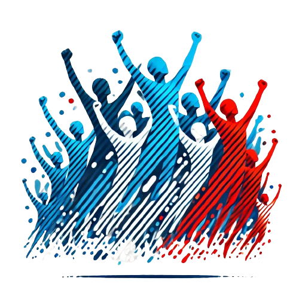

FRATERNITY V3
Créez - Imaginez - Jouez
Découvrez la vidéo présentation de notre serveur -->
DISCORDBienvenue à Fraternity
FRaternity : Chronique d'une renaissance après le chaos
FRaternity, autrefois une métropole florissante et diversifiée, a vu sa prospérité bouleversée par la trahison et la violence. Nichée entre des collines majestueuses et une baie scintillante, la ville était le symbole d'une économie dynamique et d'une riche diversité culturelle.
Le philantrope Horacio Velasquez, qui avait initialement contribué à l'épanouissement de la ville, a révélé ses sombre ambitions en orchestrant un coup d'État sanglant contre les autorités de FRaternity. Ce coup a plongé les quartiers d'affaires et culturels dans le chaos, transformant la ville en un terrain de violence et de criminalité.
La réponse du gouvernement français a été rapide et impitoyable. L'armée a été déployée pour rétablir l'ordre, et après des mois d'affrontements, une fragile paix a été rétablie. Les quartiers ravagés ont commencé à se relever, mais la menace de Velasquez, toujours en fuite, persiste.
Pour restaurer la stabilité, le président Gautier a nommé de nouveaux dirigeants intègres et expérimentés pour remplacer ceux qui avaient été assassinés. Ces nouveaux leaders ont mis en place des réformes substantielles pour renforcer la sécurité, lutter contre la corruption et stabiliser l'économie de la ville.
Dans un discours poignant, le président Gautier a déclaré : "Nous tournons la page sur le sombre chapitre de notre histoire. Ensemble, nous reconstruirons FRaternity, restaurerons son éclat et forgerons un avenir de justice et de prospérité."
Alors que FRaternity entame un nouveau chapitre, ses habitants se préparent à relever les défis de la reconstruction, avec l'espoir d'un avenir meilleur malgré les cicatrices du passé.
ÉCRIVEZ VOTRE PROPRE HISTOIRE...
Et vivez-la avec toute la communauté de FRaternity! Créez des liens, fondez un groupe, grimpez les échelons : tout est possible ! Et n'oubliez pas, la seule limite au RP, c'est vous-même.
DES ÉVÈNEMENTS RÉGULIERS
Que vous fassiez partie de l'illégal ou du légal, des Aides sont organisés pour toutes et tous ! Le STAFF s'engage à donner aux citoyens tous le matériel nécessaire pour vos propres events !
DES MÉTIERS LÉGAUX FRANÇAIS
La Police Nationale, les médecins du SAMU, les Sapeurs-Pompiers. Des métiers d'exception pour vous protéger, vous soigner, vous secourir, vous aider dans votre vie quotidienne.
DES VÉHICULES EXCLUSIFS
Profitez de véhicules exclusifs au serveur, modélisés et développés pour vos yeux et votre expérience RP ! Retrouvez nos différents véhicules au concess, en occasion ou dans nos boutiques !
Pourquoi choisir Fraternity ?
Pourquoi choisir notre serveur GTA RP FiveM ?
Chers passionnés de GTA et de Roleplay,
Si vous êtes à la recherche d'une expérience immersive et unique dans l'univers de GTA RP, notre serveur est l'endroit idéal pour vous. Voici pourquoi vous devriez nous choisir :
-
1. Une Communauté Accueillante et Active
Nous sommes fiers de notre communauté chaleureuse et dynamique. Ici, chaque joueur est accueilli comme un membre de la famille. Que vous soyez un vétéran du RP ou un débutant, vous trouverez toujours du soutien et des partenaires de jeu prêts à partager des aventures inoubliables.
2. Des Règles Claires et Justes
Nos règles sont conçues pour garantir une expérience de jeu équilibrée et agréable pour tous. Nous nous engageons à maintenir un environnement respectueux où chacun peut s'amuser sans subir de comportements toxiques ou perturbateurs. Notre équipe de modération est réactive et impartiale, toujours prête à intervenir en cas de besoin.
3. Un Gameplay Immersif et Varié
Notre serveur offre une large gamme d'activités et de métiers pour satisfaire toutes les envies. Que vous souhaitiez être un policier dévoué, un médecin secouriste, un entrepreneur prospère, ou même un criminel audacieux, les possibilités sont infinies. Chaque rôle est soigneusement intégré pour offrir une immersion totale et réaliste.
 -
4. Des Aides Réguliers et Exclusifs
Nous organisons régulièrement des Aides spéciaux qui enrichissent l'expérience de jeu et renforcent les liens au sein de la communauté. Qu'il s'agisse de compétitions, de fêtes de quartier, ou de missions scénarisées, il y a toujours quelque chose d'excitant à vivre sur notre serveur.
5. Un Développement Constant et Innovant
Nous sommes constamment à l'écoute de notre communauté pour améliorer et enrichir le serveur. Nos développeurs travaillent sans relâche pour ajouter de nouvelles fonctionnalités, corriger les bugs et proposer des mises à jour régulières. Vous pouvez compter sur nous pour garder le serveur à la pointe de l'innovation dans le monde de GTA RP.
6. Des Graphismes et Performances Optimisés
Nous avons optimisé notre serveur pour offrir les meilleures performances possibles, avec des graphismes améliorés et une stabilité remarquable. Vous pourrez profiter pleinement de vos sessions de jeu sans interruptions ou lag, même lors des moments les plus intenses.
En conclusion, choisir notre serveur GTA RP, c'est rejoindre une aventure palpitante au sein d'une communauté soudée, où chaque jour apporte son lot de surprises et de défis. Nous avons hâte de vous accueillir et de partager avec vous des moments mémorables.
À très bientôt sur notre serveur !
L'équipe de Fraternity.